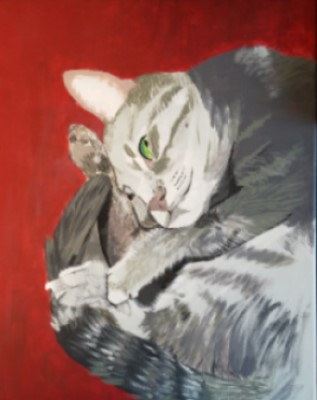

About Me
 I am a third-year student in the Human-Computer Interaction (HCI) program at Iowa State University. I attained my M.S. in HCI in August of 2019 and aim to acheive my Ph.D. in May of 2022. User Experience (UX) and Computer Supported Cooperative Work (CSCW) are my favorite topics. I aim to continue researching teams, teamwork, and user experience.
As a user researcher, the skill set I earned as a motivated psychology student directly impacts the studies I conduct. To date, I have crafted twelve surveys and led seven semi-structured interviews. I implemented these tools in all nine projects I have been involved with, seven of which are efforts I led. I am also experienced in creating observational note sheets and in gathering design requirements.
My main interest is in teams. I want to help teammates interact whether they are solving problems in the same room or in the same application. I see a real opportunity for improving collaboration via technology, and I am determined to see it to fruition.
I have a passion for the creative, seeking fulfillment as a poet, a painter, and a non-fiction writer. The painting I am most proud of, currently, is pictured here! I also enjoy running and hiking, playing cooperative multi-player video games, and crafting toys and furniture for my two kitties.